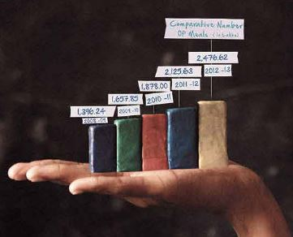

Category
NEWS
->Akshaya Patra is a model of cooperation and scale that you have accomplished and demonstrated. It is better than any other model in the world. US Congressman Joseph Kennedy , III (D-MA) of Massachusetts->Akshaya Patra's blue bus is a symbol of hope for the thousands of children across the country. The bus signifies that the child will not go hungry and we thought that the best way to be a part of this programme is by donating the vehicle. S R Bansal, Chairman and Managing Director Corporation Bank
About Us
About Us The Akshaya Patra Foundation is a not-for-profit organisation headquartered in Bangalore, India. The organisation strives to fight issues like hunger and malnutrition in India. By implementing the Mid-Day Meal Scheme in the Government schools and Government aided schools, Akshaya Patra aims to fight not only hunger but also to bring children to school and there by provide food for education. Since 2000, the organisation has worked towards reaching more children with wholesome food on every single school day. Akshaya Patra is continuously leveraging technology to cater to millions of children. Its state-of-the-art kitchens have become a subject of study and they spark curiosity among many enthusiasts from around the world. In partnership with the Government of India and its respective State Governments, and inestimable support from many businesses, philanthropic donors and well-wishers; we have grown from our humble beginnings in the year 2000, serving just 1500 children across 5 schools. Today Akshaya Patra is the world’s largest (not-for-profit run) mid-day meal programme serving wholesome food to over 1.39 million children from 10,631 schools across 10 states in India. A brief on the growth of The Akshaya Patra Foundation On November 28, 2001 the Supreme Court of India passed a mandate that: "Cooked mid-day meal is to be provided in all the Government and Government-aided primary schools in all the states." Akshaya Patra was called upon to provide testimonies to the Supreme Court in order to have the mandate passed. By the time the Ministry of Human Resource Development - Department of School Health and Education extended its support to the initiative in 2003, Akshaya Patra was already reaching out to 23,000 children. Today, Akshaya Patra has grown from One (in the year 2000) to 22 locations spread across 10 states in India, a result of the successful partnership with the Government of India and various State Governments as well as the generosity of thousands of supporters.